Fotos de tortas · antes y despues
Izquierda original, derecha con la luz y el color corregidos. La escena
no se toca: pared, mantel y sombras quedan como estaban.
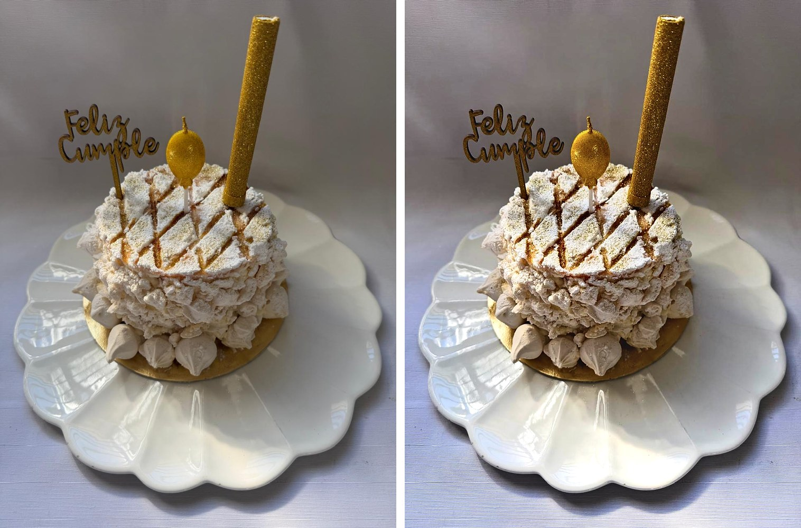
Torta de merengue con dulce de leche
exposicion x1.203 ·
blanco medido 218.5 → 237
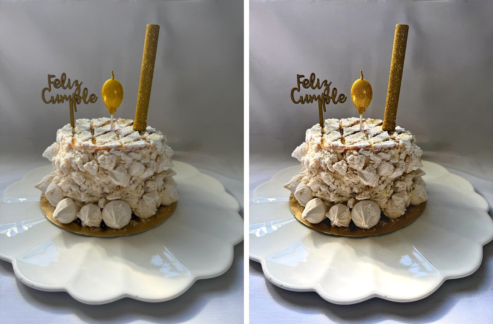
Torta de merengue, vista completa
exposicion x1.116 ·
blanco medido 225.9 → 237
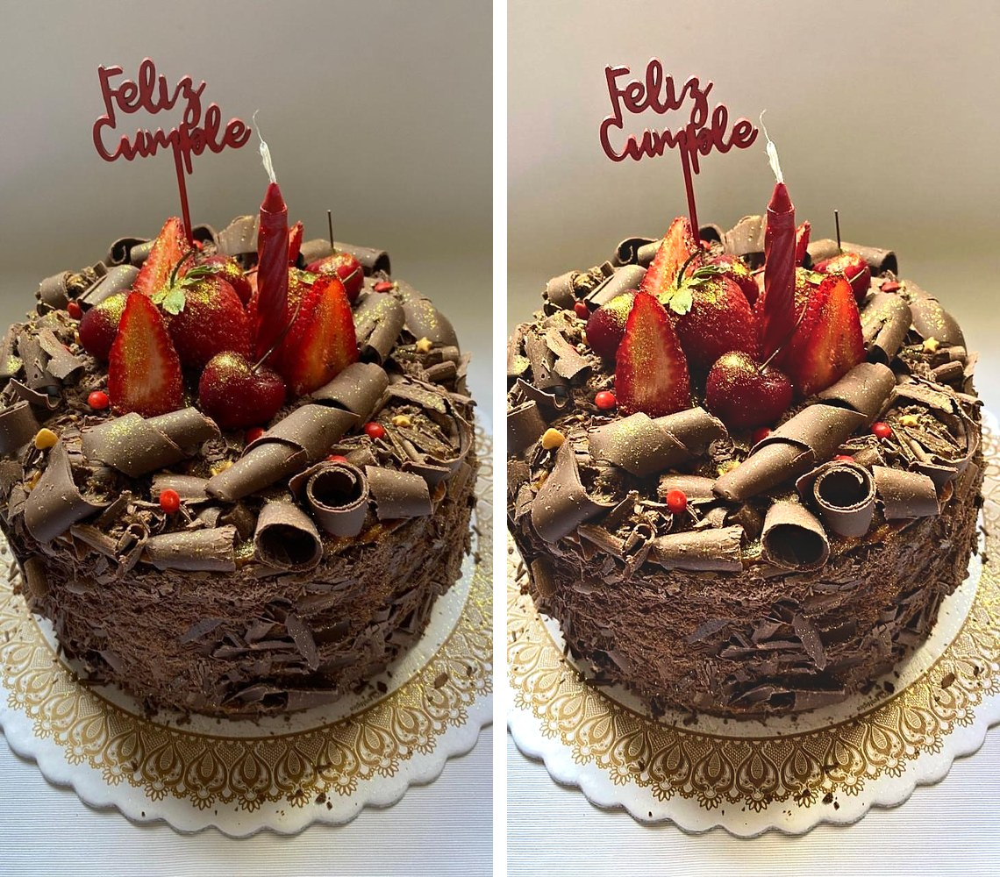
Torta de chocolate con frutillas
exposicion x1.372 ·
blanco medido 206.1 → 237
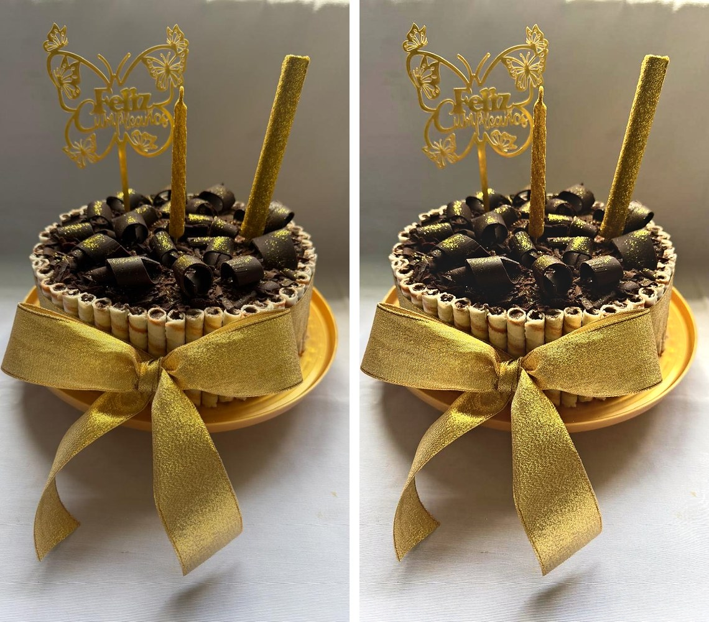
Torta de chocolate con lazo dorado
exposicion x1.239 ·
blanco medido 215.7 → 237
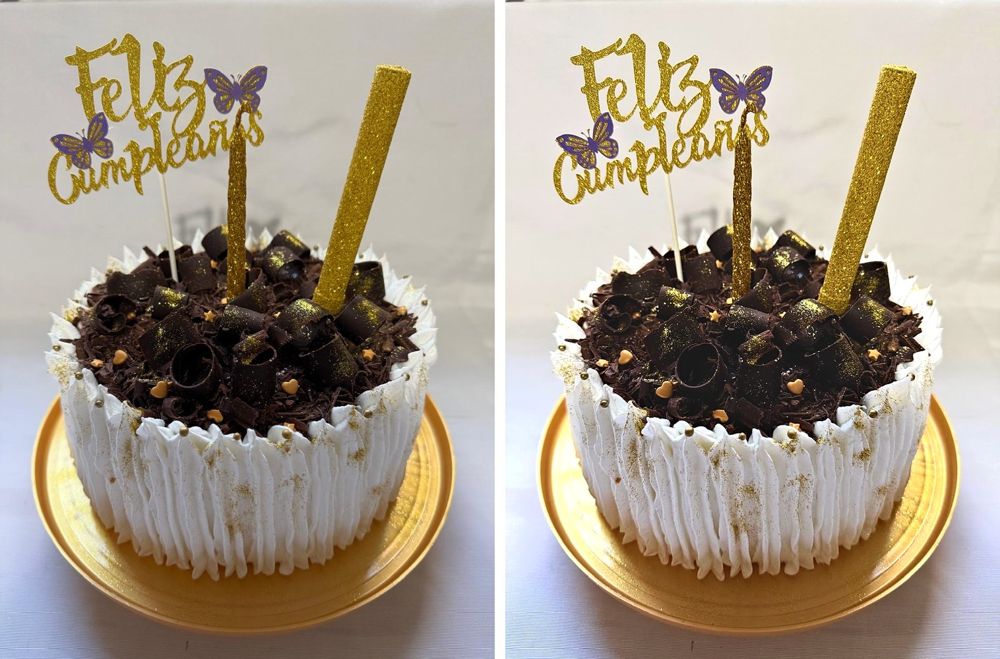
Torta de crema y chocolate con detalles dorados
exposicion x1.256 ·
blanco medido 214.4 → 237
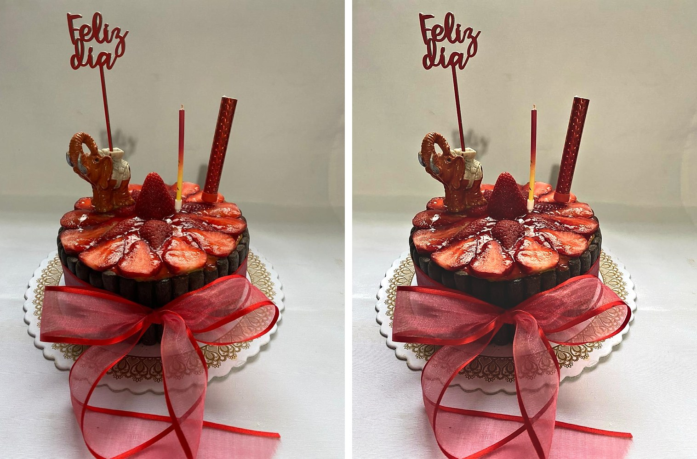
Torta de frutillas con lazo rojo
exposicion x1.111 ·
blanco medido 226.4 → 237
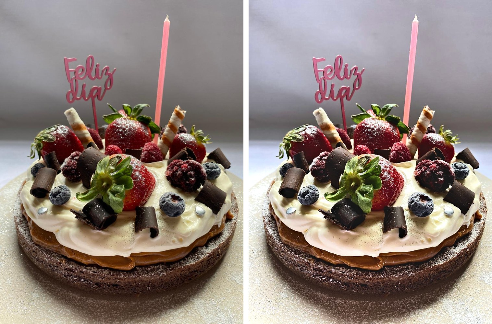
Brownie con crema y frutos rojos
exposicion x1.26 ·
blanco medido 214.1 → 237
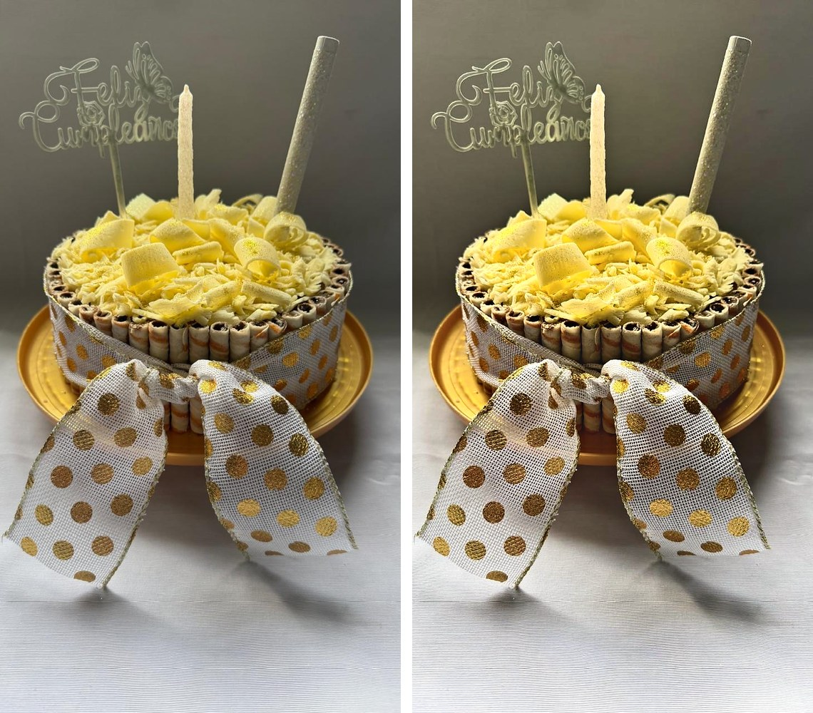
Torta de chocolate blanco con lazo de lunares
exposicion x1.109 ·
blanco medido 226.6 → 237
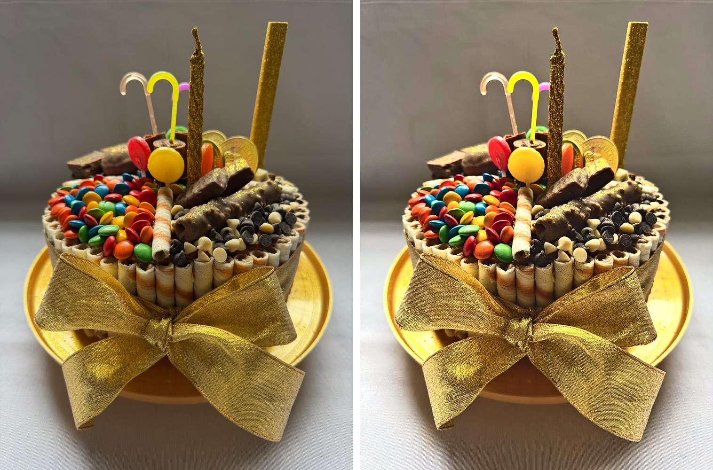
Torta de golosinas
exposicion x1.288 ·
blanco medido 212.0 → 237
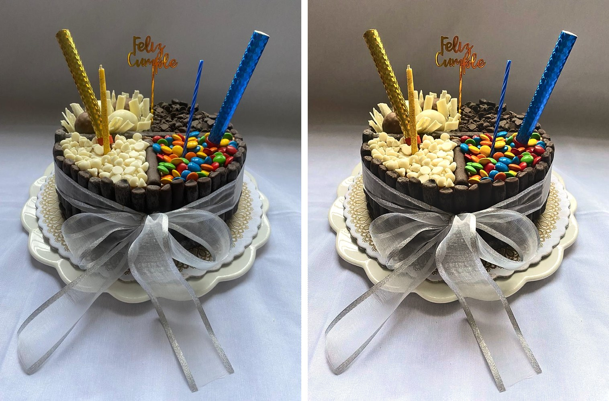
Torta cuatro chocolates
exposicion x1.157 ·
blanco medido 222.3 → 237
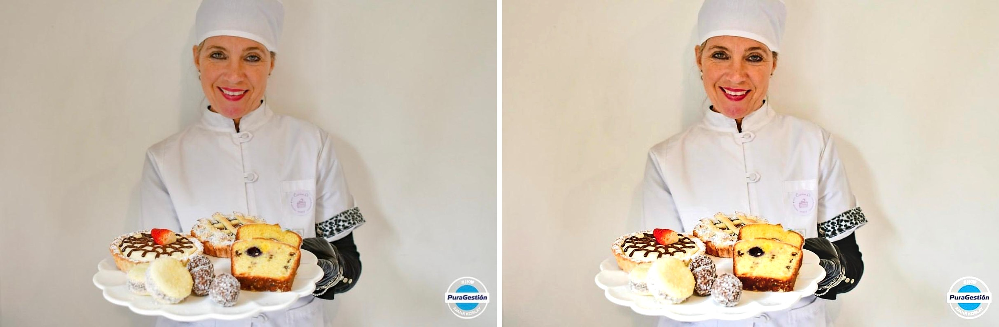
La pastelera con la bandeja de dulces
exposicion x1.175 ·
blanco medido 220.8 → 237
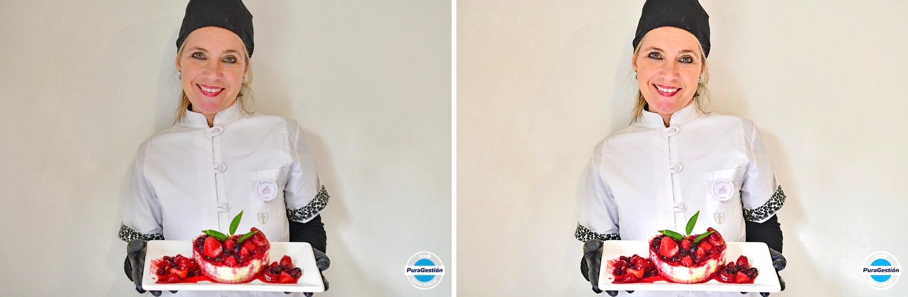
La pastelera con el cheesecake de frutos rojos
exposicion x1.165 ·
blanco medido 221.7 → 237
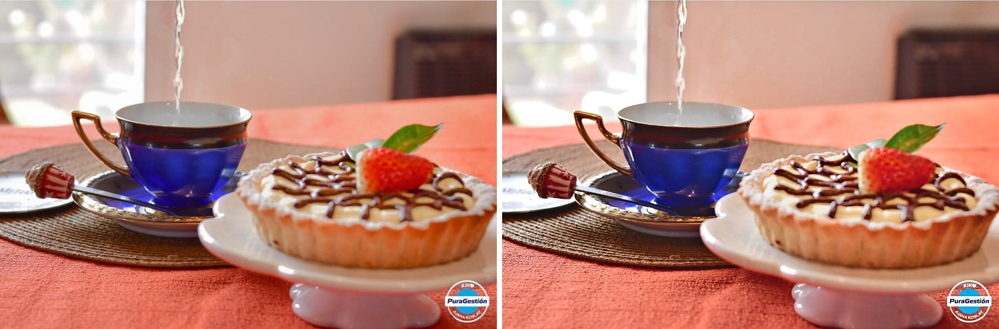
Tarteleta y te
exposicion x0.955 ·
blanco medido 242.0 → 237
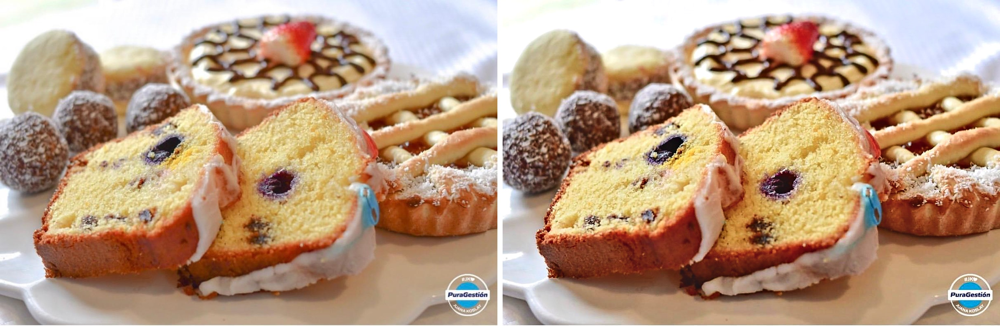
Mesa dulce: budin, tartas y alfajores
exposicion x0.957 ·
blanco medido 253.1 → 237
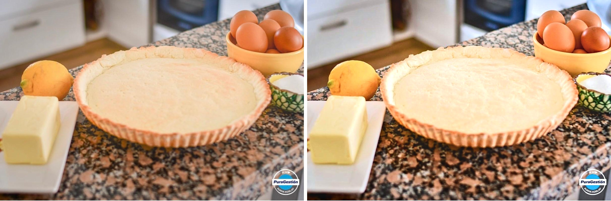
La masa y los ingredientes
exposicion x1.197 ·
blanco medido 219.0 → 237
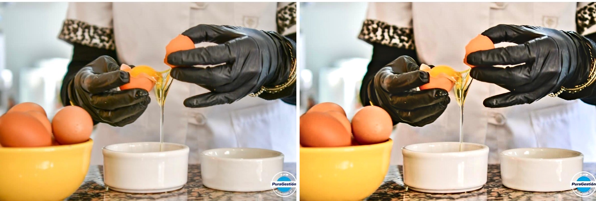
Cascando los huevos
exposicion x0.988 ·
blanco medido 238.5 → 237
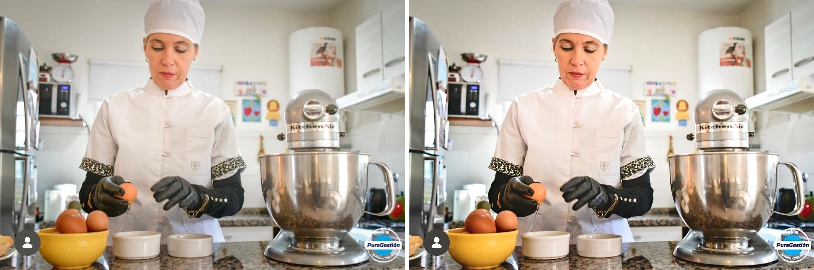
La pastelera en la cocina
exposicion x1.031 ·
blanco medido 233.9 → 237